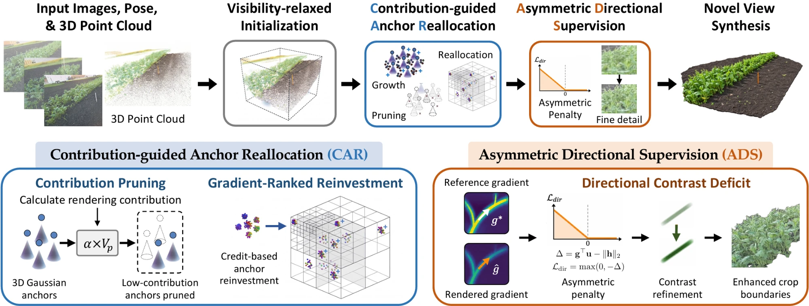

Abstract
Reliable three-dimensional (3D) reconstruction of field-grown crops remains challenging due to thin and overlapping plant structures, wind-induced foliage motion, and variable natural illumination. Longitudinal agricultural datasets and standardized novel-view synthesis (NVS) benchmarks for field conditions remain limited.
We present an integrated framework connecting robotic acquisition, dataset construction, NVS benchmarking, and agricultural scene reconstruction. We develop AgriChrobot, a robotic platform supporting web-based teleoperation and repeated multi-view acquisition along crop rows. Using this platform, we construct AgriChrono, a longitudinal canola dataset comprising 160 recording sessions over approximately one month, with four RGB streams, two depth maps, and camera-pose estimates. We establish seven NVS evaluation scenarios comprising four time-of-day and three acquisition-date scenarios, and evaluate 15 NeRF- and Gaussian Splatting-based methods. Beyond whole-image quality, we evaluate fine-detail reproduction within manually annotated canola regions using gradient- and edge-based metrics. The benchmark reveals that competitive whole-image performance does not necessarily translate into faithful reproduction of fine visual details in thin and overlapping crop structures.
Motivated by this finding, we propose AgriSplat, which relaxes initial visibility filtering and reallocates capacity through contribution-based pruning and budgeted reinvestment into sub-threshold candidates ranked by existing gradient statistics. After anchor reallocation, asymmetric supervision penalizes insufficient contrast along reference image-gradient directions. Compared with Octree-GS, AgriSplat improves the crop-region gradient-energy ratio from 0.506 to 0.847 and edge F-score from 0.712 to 0.797, averaged across seven scenarios, while also improving whole-image PSNR, SSIM, and LPIPS. Together, these contributions support systematic research on scene-level crop reconstruction under field conditions.

×